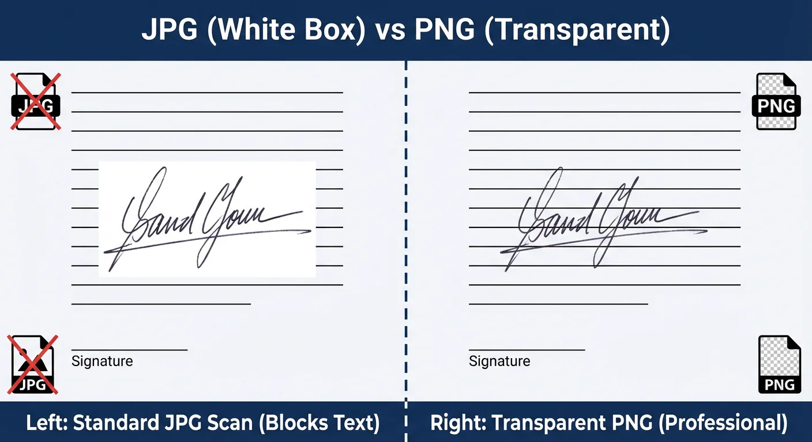

You have just signed a crucial contract, scanned it, and dragged the image into your Word document. But instead of looking like professional ink on the page, a large, ugly white box is blocking your text.
This is the most common frustration with digital documents. The white background cuts off lines, covers important text, and makes your contract look like a cheap collage.
If you need to know how to make a signature transparent, you have three options. You can use a free online generator (fastest), edit the file in Microsoft Word (messy), or use complex software like Photoshop (expensive). In this guide, we will focus on the most efficient free methods.

What is a Transparent Signature PNG?
Before we fix the problem, we must understand the file formats. The reason your scanned signature has a white background is likely because it is saved as a JPG (JPEG).
The JPG format does not support transparency. It treats "white paper" as "opaque white paint." To fix this, you must convert your signature into a PNG (Portable Network Graphics) file.
A Transparent Signature PNG contains an "Alpha Channel." This tells the computer that the background pixels should have 0% opacity (invisible), allowing the document lines underneath to show through.
Method 1: Use a Free Transparent Signature Generator
The absolute best way to create a transparent signature is not to scan paper at all. Scanned images are often blurry, pixelated, and suffer from lighting shadows.
Instead, using a tool like Signature Sketch creates a vector-based image. This ensures the ink is sharp and the background is mathematically perfect transparency.
Why is this method superior?
- No Sign-Up: You do not need to register an account to download your file.
- 100% Free: No hidden paywalls for high-resolution downloads.
- Vector Quality: The signature looks crisp even when resized.
Step 1: Open the Generator
Go to the Signature Sketch Generator. It works on your desktop, tablet, or mobile phone browser.
Step 2: Draw Your Signature
Use the drawing pad to sign your name.
- On Desktop: Use your mouse or trackpad.
- On Mobile: Rotate your phone to landscape mode for more space and sign with your finger.
Step 3: Download Transparent PNG
Choose your color. We recommend Blue (#0047AB) for contracts to look like original wet ink. Click the download button, and you will instantly get a PNG file with no background.
Method 2: How to Make a Scanned Signature Transparent
If you are legally required to use a specific scan of an old wet-ink signature, you can try to remove the background manually. However, be warned: these methods are "destructive" and often leave jagged edges.
Option A: Using Microsoft Word
Word has a built-in tool, but it is not perfect.
- Insert your scanned image into Word.
- Click the image to reveal the Picture Format tab.
- Click Color (on the left) and select Set Transparent Color.
- Click the white background of your signature. Word will try to erase it.
Result: Often leaves a white "halo" around the ink.
Option B: Using Mac Preview (MacOS)
Mac users have a slightly better tool called "Instant Alpha."
- Open your image in Preview.
- Click the Markup Toolbar (pen icon).
- Select the Magic Wand icon.
- Click and drag on the white background until it turns red, then press Delete.
Why Avoid White Background Signatures?
Using a proper transparent signature PNG is crucial for modern professional workflows.
- Dark Mode Emails: If you attach a white-box signature to an email, and the recipient uses Dark Mode, your signature will look like a glaring white block. A transparent PNG adapts to any background color.
- PDF Contracts: Legal documents often use blue or grey backgrounds for header sections. Only a transparent signature can sit on top of these design elements without covering them.
- Brand Image: A clean, floating signature looks like you took the time to print and sign the document, whereas a white-box signature looks like a quick copy-paste job.
Comparison: Generator vs. Scanner
| Feature | Signature Sketch (Method 1) | Scanning Paper (Method 2) |
|---|---|---|
| Transparency | 100% Perfect | Often Pixelated |
| Time Required | 30 Seconds | 10+ Minutes |
| Cost | Free | Scanner / Software |
| Quality | High (Sharp Edges) | Low (Blurry/Noisy) |
Frequently Asked Questions
How do I make a signature transparent in Word?
Use the "Set Transparent Color" tool under the Picture Format tab. However, for a cleaner look, we recommend generating a PNG file first and then inserting that into Word.
Can I convert a JPG signature to transparent?
You cannot make the JPG itself transparent. You must convert it to a PNG file and use software to remove the white pixels (Alpha Channel).
Is it safe to use an online signature maker?
Yes, provided you use a secure tool. Signature Sketch processes your drawing locally in your browser (Client-Side), meaning your signature is never uploaded to a cloud server.
Create Your Transparent Signature
No sign-up. No Photoshop. Just a perfect digital signature in seconds.
Start Drawing Now